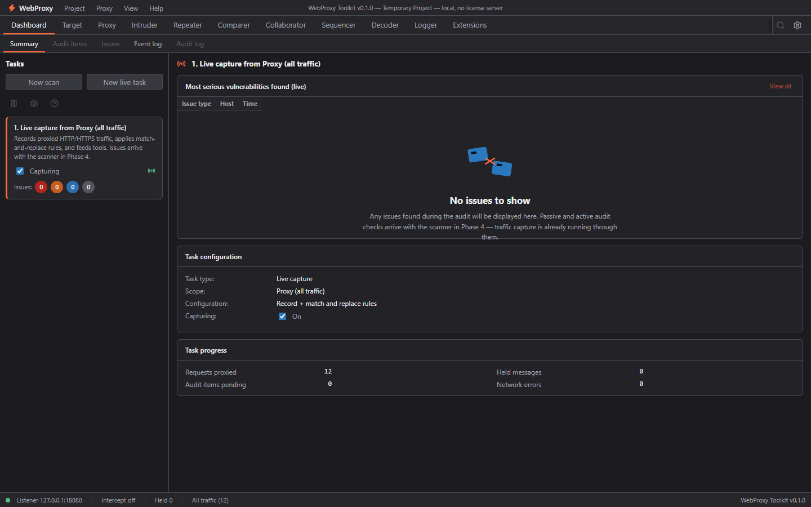
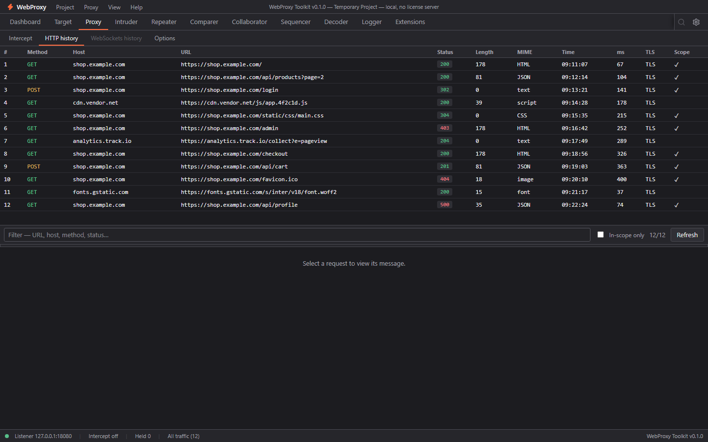
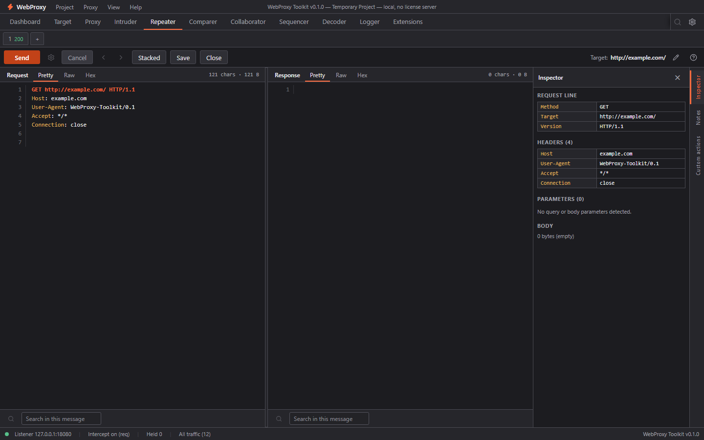
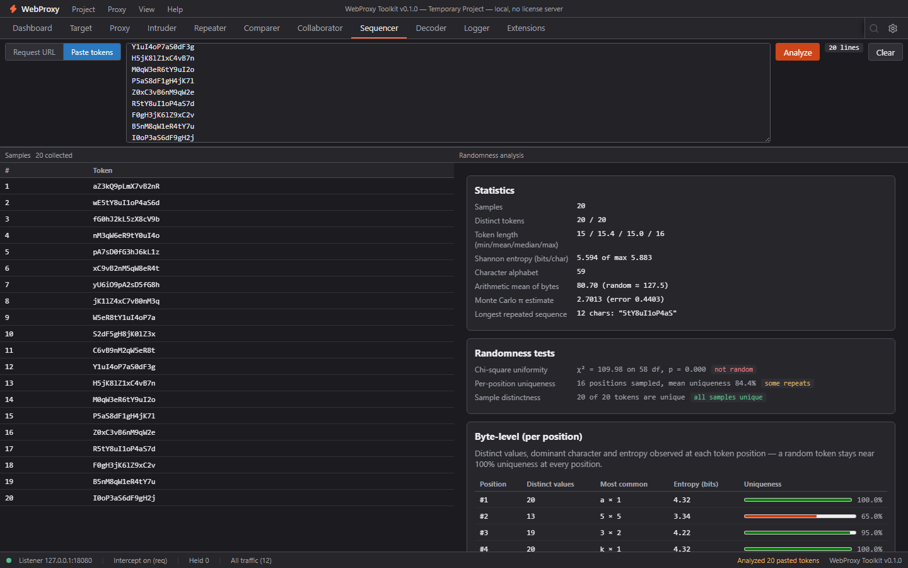

Proxy
MITM HTTP/HTTPS with a locally generated CA, rich history (Pretty / Raw / Hex, find bar), request & response interception with an inline held-message editor, scope, and match/replace rules.
A Burp Suite–style web security workbench that runs entirely on your machine.
Fetching latest release…

Loading release notes…
WebProxy Toolkit is a desktop web-security workbench inspired by the workflow of Burp Suite, rebuilt from scratch as a modern Tauri + React + Rust app. It runs fully offline on your own machine.
It bundles a full interception proxy with a MITM CA, a site map and scope, a multi-tab Repeater, a position-and-payload Intruder, a passive + active Scanner with an issue framework, a Comparer, a Sequencer for token randomness, a Decoder, a persistent Logger, a local Collaborator for out-of-band testing, and an embedded JavaScript extension engine — all in one window.
Everything is stored locally in SQLite. There is no cloud sync, no account, and no external dependency at runtime.
A full interception-proxy tool suite — built from scratch, running locally.
MITM HTTP/HTTPS with a locally generated CA, rich history (Pretty / Raw / Hex, find bar), request & response interception with an inline held-message editor, scope, and match/replace rules.
Site map with URL and HTTP-method views, crawl paths, in-scope filtering, and a linked issue list.
Multi-tab request editor with a parsed inspector (line, headers, parameters, body), send/cancel, per-tab history, and follow-redirects.
§…§ positions, 4 attack types (sniper, battering ram, pitchfork, cluster bomb), up to 8 payload sets with 14 processors, resource pool, live results and grep extractors.
Side-by-side line and word diffs of any two messages, with a differences table and prev/next navigation.
Token randomness analysis: live sampling (cookie / header / regex) or pasted samples — entropy, chi-square, Monte Carlo π, per-position stats.
Encode/decode transforms: URL, Base64, hex, and more.
Persistent event log across proxy, repeater, scope, scanner and system, with tool/level/text filters — also embedded in the Dashboard.
17 passive checks on every in-scope response, an active audit engine that crawls and tests parameters (SQLi, XSS, traversal, open redirect, sensitive files), issue framework with dedupe/severity, and live scan tasks.
Local out-of-band server: DNS + HTTP listeners, payload generation (URL / HTML / hostname) with unique subdomains, and a live interaction log pushed to the UI in real time.
Embedded QuickJS engine with our own wpt JS API: proxy listeners, HTTP handlers, context-menu actions, and custom report tabs in sandboxed iframes — with an error latch and console.
Session-handling rules with macros (replay + extract + auto-set headers/cookies/params), upstream proxy chaining, TLS pass-through hosts, and extra listeners.
A dark, keyboard-first, WCAG-AA accessible UI.



All phases shipped.
| Phase | Feature | State |
|---|---|---|
| 1 | App shell, Proxy (history / intercept / options), Target, Repeater, Decoder, Settings | done |
| 2a | Comparer, Sequencer, Logger (+ Dashboard event log) | done |
| 2b | WebSocket history, global search, Repeater per-tab history & follow-redirects, intercept Action menu | done |
| 3 | Intruder (attack engine, positions, payload sets, results) | done |
| 4 | Passive scanner, Issues view, active audit, crawling, scan configs | done |
| 6 | Extensions (embedded JS engine, Burp-like extension API) | done |
| 7 | Collaborator (local out-of-band interaction server) | done |
| 8 | Session handling & macros, upstream proxy, TLS options, multi-listener, shortcuts | done |
Grab the latest Windows installer. The button always points to the newest release.
Authorized testing only. Run it only against systems you own or have permission to test.
Licensed under BUSL-1.1 — source is viewable, but reuse, resale, or hosting as a service is not permitted. Converts to AGPL-3.0 on 2030-10-14. Read the license ↗